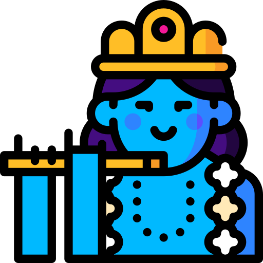

While your friends were teasing you, Yadavs were literally feeding the nation. Let that sink in.
Because cows built one of the world's oldest agricultural civilizations, and dairy is now a Rs. 10+ lakh crore industry in India alone. Your ancestors weren't just farmers. They were the original engineers of Indian food culture.
Cows form close bonds with other cows. When separated from their best friend, their stress hormones spike. They literally have besties.
Cows can recognize and remember over 100 individual faces — both cows and humans. They hold grudges too. Don't mess.
A single cow produces an average of 200,000 glasses of milk in her lifetime. That's enough chai for your entire mohalla. Forever.
Cows are revered in Hinduism, respected in ancient Egypt, and considered symbols of prosperity in dozens of cultures worldwide. Universal respect.
Cows make specific sounds to express emotions. Researchers found they hum at a lower frequency when happy and higher when stressed. Pure mood.
Indian breeds like Gir, Sahiwal, and Red Sindhi are now exported globally for their superior milk quality and heat resistance. Made in India. World-class.
Next time your friends open their mouths, just pick one of these and walk away.
"Yes, and cows built an industry worth more than most countries' GDPs. What has your family business built?"
"Every chai, lassi, paneer, ghee, and butter you've ever eaten exists because of people like my community. You're literally nourished by us. You're welcome."
"Lord Krishna — the most beloved figure in Indian history — was a Yadav. I'm in good company."

"India is the #1 milk producer in the world. We're feeding 1.4 billion people. What are YOU doing?"